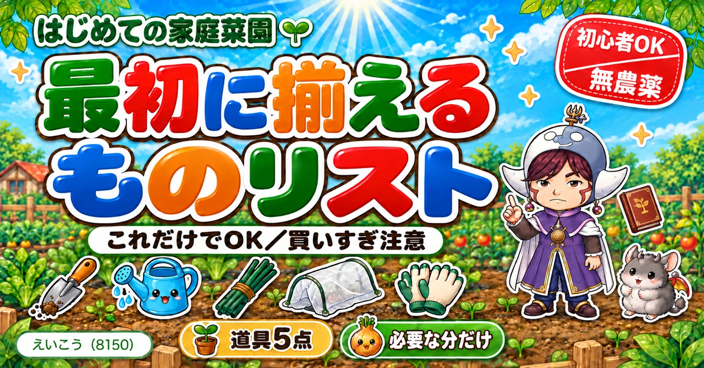
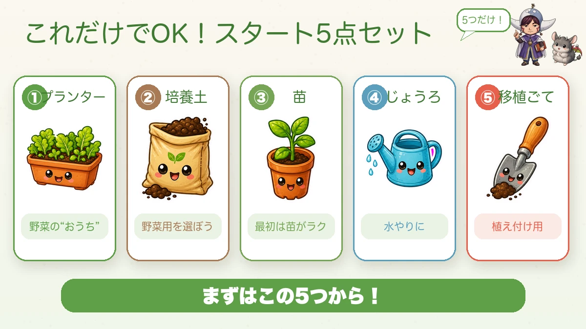
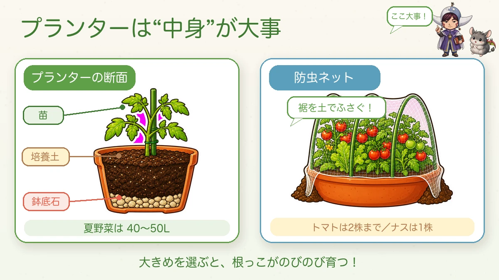
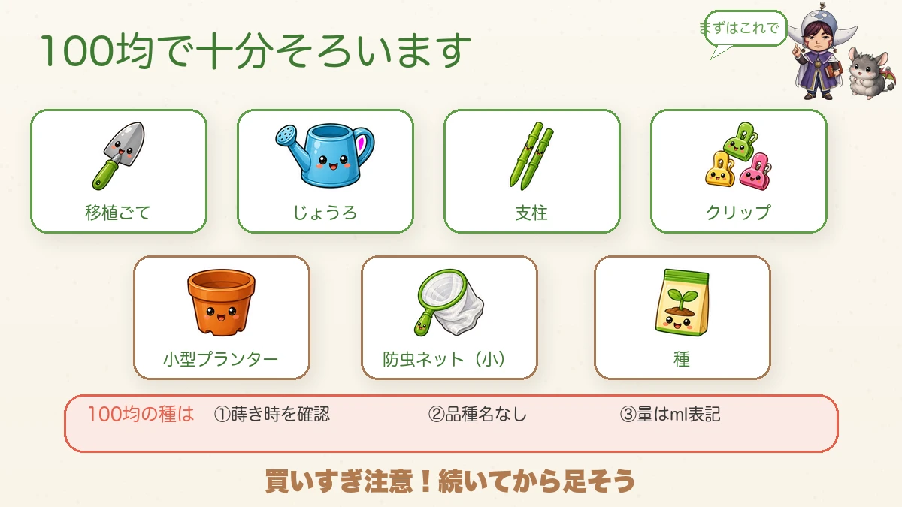

家庭菜園の買い物ガイド｜容器・土・苗と防虫ネットの選び方

📖 この記事の目次
この記事で分かること
- 買い物は『育てる場所』『野菜の種類』『植える数』を決めてから始めます。
- 容器・土・種苗・水やり道具・植え付け道具を基本に、作物に合わせて支柱や防虫資材を加えます。
- 夏野菜向けの40〜50Lという容量例を、小さな葉物まで共通する最低条件にはしません。
- 培養土は袋の肥料表示を確認。植える前の肥料と、生育途中の追肥を分けて考えます。
- 防虫ネットは網だけ買って終わりにせず、骨組み・固定・中を見回る作業まで用意します。
- 価格だけで選ばず、必要な寸法と使い方が合うかを比べます。鉢底石やネットを外す時期には、条件の違う説明があります。
家庭菜園の売り場って、思った以上に道具が並んでいますよね。容器を見に来たはずが、肥料もネットも気になって、なんか買い物かごが忙しい(笑)。でも、先に育てる野菜と置く場所を決めると、必要なものを絞れます。
このページでは、商品名をたくさん覚えるより『何のために使うのか』を整理します。同じ支柱でも、トマトを支えるものとネットの屋根を作るものでは、求める形が違います。土も、肥料入りの新品と、前に使った土では準備が変わります。
初めてのみなさんは『早見』から買い物メモを作り、そのあと手順へ進んでください。すでに植えて困っている場合は『失敗の見分け方』へ。全部を一度に暗記しなくても大丈夫。いまの作業に関係するところから使ってもらえたらと思います☺️

図の5点は、プランター菜園を考えるときの基本項目です。庭や畑ならプランターを買う必要はありませんし、種を直接まく野菜なら苗の購入に置き換える話でもありません。育て方に合わせて、中身を調整してください。
早見：最初に揃えるもの（ひと目で分かる数字）
買う前に見ておきたい項目
- 栽培場所：プランター、庭、借りた畑のどれかを決めます。道具が共用できる場所なら、手元で使えるものを先に確認します。
- 基本の用意：容器または栽培場所、土、種か苗、水を与える道具、植え付けに使う小さなスコップなど。容器の購入はプランター栽培の場合です。
- 夏野菜の容器：容量40〜50L程度を使う実演があります。長く大きく育てる夏野菜の例で、全野菜の必要容量を決める数字ではありません。
- 容器の見方：容量だけでなく、深さ、底の排水構造、置ける幅を確認します。根菜を育てるなら、根が伸びる方向の深さも買い物の条件になります。
- 土を入れる高さ：容器に目安線があれば確認し、縁ぎりぎりまで詰めません。水を与えたときに、土の上でいったん受け止められる余裕を残します。
- 最初の肥料：肥料が配合済みで、追加の元肥を要しない培養土があります。『培養土だから全部同じ』とはせず、袋の使い方を読みます。
- 追肥の開始：一般的な培養土では植え付け約1か月後から、という説明があります。一方、肥料が90日・100日間効くと表示された商品の使用例もあり、開始日は商品によって変わります。
- 有機資材を混ぜたあとの待ち期間：苗の植え付け準備で2週間以上、種まきの注意で約3週間という別の説明があります。入れたものと作業が違うため、一律の日数にはしません。
- ネット用支柱の間隔：約50cm〜1mの異なる実演があります。丈夫さを重視する説明では約50cm、張れることを基準にする例では約1mです。風が強ければ補強も考えます。
- ネットの幅と長さ：栽培する幅・高さ・長さに、裾と両端を閉じる余裕を加えて選びます。容器やうねの平面の寸法だけでは足りません。
- ネットの網目：対象の虫に合う規格を商品表示で確認します。細かい網目は通風などにも影響するため、細かければ無条件に優秀、とは考えません。
- ネットを外す時期：葉が窮屈になるか、蒸れていないか、外したあとの虫の影響を見て決めます。全国共通の取り外し日を決める材料はありません。
- 種まき・植え付けの時期：野菜と地域によって違います。道具を買う日から逆算するより、種袋や苗の表示にある適期に合わせて準備します。
- 株間・うね幅・収穫日数・連作の間隔：野菜ごとの項目です。この買い物記事では一つの共通値を作らず、選んだ野菜の栽培条件で確認します。
数字を買い物に変える順番
数字だけが並ぶと「結局どれを買えばええんやろ」となりますよね。まずは一つの野菜を決め、必要な土の広さと深さを確認するところからでOKです。
例えば、夏野菜用の大きな容器を選ぶなら、容器と土だけでなく、育った茎を支える支柱の置き方も考えます。葉物をネットで囲うなら、容器の縁に届く網の余裕と、葉が広がる高さが大切です。育った姿まで想像してから買うと、規格を見比べる理由がはっきりします。
土は『容器の容量と同じ量を必ず購入する』という単純な話でもありません。上部には水を受ける余裕が必要ですし、容器の底の仕様によっても使う量が変わります。袋の容量表示と、容器が想定する土の量を合わせて見ます。
買い物メモには、最低限この内容を残してください。
- 野菜名と、苗からか種からか
- 置く場所の幅・奥行きと、作業できる範囲
- 容器に必要な容量と深さ
- 培養土に肥料が含まれるか
- 支柱またはネットが必要か
- ネットを固定する道具が支柱に合うか
『大きい』『丈夫』『安い』は便利な言葉ですが、それだけでは商品を選び切れません。幅が合う、根の空間が足りる、固定できる、という具体的な条件に変えておくと、売り場で迷う時間が減ります。
作業の手順（時期の順）
1．場所と野菜を決め、使える道具を確認する
- 育てる場所を決め、容器を置く幅や、庭・畑で作業する範囲を測ります。
- 育てたい野菜を選び、種か苗か、必要な株間や容器の深さを確認します。
- 家にある道具、借りられる道具、共用できる道具を並べます。
- 足りないものを『今の作業に必要』『生育途中に必要』に分けて書きます。
ここで作るのは、買える商品の一覧ではなく、自分の栽培に必要な一覧です。プランター派と畑派では、最初から違っていて大丈夫。すでに使える容器があるなら、その大きさで育てられる野菜を選ぶ考え方もあります。
逆に、育てる野菜が先に決まっているなら、野菜の条件に容器を合わせます。長く育つ夏野菜を、小さな容器に無理に詰め込む計画は避けたいところです。商品を買ってから野菜の条件を調べると、同じものを買い直すことになりかねません。
葉物を少し育てるのか、背の高い野菜を育てるのか。収穫する姿だけでなく、途中の大きさも見ます。ネットを開けて虫を探せるか、水を運んで届くかまで確認すると、買ったあとに使いやすい配置を考えられます。
2．容器は根の空間と水の出口で選ぶ
- 野菜に合う容量と深さを確認します。
- 容器の底を見て、排水穴やスリットの構造を確かめます。
- 土を入れる目安と、底に必要な資材があるかを製品の説明で確認します。
- 置いたときに水の出口をふさがないか、支柱やネットを設置できるかを考えます。
プランターは、見えている箱であると同時に、根が暮らす範囲を決めるものです。幅が広くても浅ければ、深さを要する野菜には合いません。反対に、深さだけあっても、何株も植えてよいという意味ではありません。
夏野菜で40〜50L程度という例があるのは、育つ期間が長く、根も大きく広がることを考えての説明です。『この容量なら、どの野菜でも何株でも大丈夫』と読むと、根の取り合いが抜けてしまいます。容器の大きさを見たあと、植える数も別に決めてください。
鉢底石については、買う前に底の作りを見ます。底に敷くことを勧める説明と、スリットからの土の流出を別の資材で抑える説明があります。石を買ったから排水の確認は終わり、とはしません。使う容器の説明に沿って準備します。
容器の色や形を選ぶのも楽しいんですが、最後に底を一回ひっくり返して見てみましょう。見た目の主役ではない底の部分が、水の行き先を決めるんですよね。
3．培養土は使い方と肥料表示をセットで読む
- 野菜の容器栽培に使える土かを袋の用途で確認します。
- そのまま使う製品か、別のものを混ぜる前提かを読みます。
- 肥料の配合、追加する元肥の要否、追肥の案内を確認します。
- 購入量を容器の必要量に合わせ、袋の説明を写真やメモで残します。
培養土は、水の抜け方、水の残り方、空気の通りなどを考えて組み合わせた土です。初めて使うときは、その商品の使い方を守ることが出発点になります。『よく育ちそうだから、さらに肥料も混ぜる』と、せっかくの配合を見ずに追加しないでください。
肥料が入っている製品なら、植える前に同じ目的の肥料を足さなくてよい場合があります。ただ、それは栽培の最後まで肥料が不要という意味ではありません。最初の分と、あとで補う分は別の仕事です。
追肥を始める頃は、約1か月後からという説明も、長く効く肥料入り製品の説明もあります。土の名前だけで予定を決めず、手元の表示に合わせます。最初に写真を残しておくと、袋を片づけたあとでも確認できます。
前の栽培で使った土は、新品の肥料入り培養土と同じ扱いにはしません。残った根、土の状態、排水、前作の問題を確認する作業が加わります。土を再利用する材料もありますが、『何もせず、そのまま次の苗を入れる』という意味ではないんです。
4．苗と種を、植える予定に合わせて用意する
- 選んだ野菜が、苗の植え付けか種の直接まきかを確認します。
- 種なら袋の適期、株間、まき方を確認します。
- 苗なら軸、葉の茂り、葉色、傷みや虫の有無を見ます。
- ポット内で根が巻きすぎていないかを、確認できる範囲で見ます。
- 容器・土・ネットなどの準備が整う日に合わせて購入します。
種と苗は、どちらか一方が全野菜で優れている、という関係ではありません。苗から始めると育苗の作業を省ける野菜があります。一方、直接種をまく育て方の野菜なら、その方法に合う種を選びます。道具の一覧に『苗』とあっても、そこは育て方に合わせて読み替えてください。
苗を見るときは、背が高い、葉が多い、という一つの見た目だけで決めません。軸や葉の状態に加えて、根がポットの中で込み合っていないかも判断材料になります。根は見えにくいからこそ、地上の大きさだけで選ばないことが大事です。
店頭で苗が並んでいても、みなさんの場所で植える準備ができているとは限りません。土を整える作業や、ネットを取り付ける作業が残っていないかを先に確認します。買った苗を待たせるより、迎える場所を先に作る流れです。
種袋は、購入直後だけでなく植え付け中にも使います。同じ野菜名でも、品種によって育つ大きさや適期が違うためです。袋に書かれた数字を、別の品種の説明で上書きしないようにしてください。
5．水やり道具は、水流を整えられるかで考える
- 水を運ぶ距離と、実際に持てる量を確認します。
- 苗や種の位置に、穏やかに水を与えられる道具を用意します。
- 植えた場所の外で水を出し、水流が安定してから土に向けます。
- 水を止めるときも、種をまいた位置から外して止めます。
じょうろは商品を選ぶだけでなく、使い方も大切です。出始めの大きな水のかたまりが、種まきの位置に直接当たると、種や表面の土を動かしてしまいます。まず外で流れを整えるだけでも、狙った場所に水を与えやすくなります。
『大きいじょうろなら、一回で済む』という便利さと、『水を入れた状態で無理なく扱える』という使いやすさは分けてください。水流が安定する前に手元がふらつけば、容量の大きさが助けになりません。自分が扱えることを買い物の条件にします。
土の表面は、できる範囲で平らに整えます。大きな凹凸があると、水が一方に集まりやすくなるためです。ここでは土を強く押し固めるのではなく、水が偏って流れないように整える、と考えると分かりやすいです。
6．植え付け道具と、野菜を支える資材を確認する
- 苗を植える穴を作る小さなスコップなど、作業に合う道具を用意します。
- 植える位置と株間を決めてから、穴を作ります。
- 茎を支える野菜なら、支柱と結ぶ資材の用意を確認します。
- 支柱の長さだけでなく、固定する部分と、作業時に手が届く高さも考えます。
移植ごては苗を植えるときの道具です。使う場面は穴を作る、土を寄せる、といった小さな作業になります。購入するときは、握って使えるか、手元に同じ作業ができる道具がないかを確認します。
特定の価格帯なら品質が十分、という比較結果まではありません。安い店で見つかることと、みなさんに使いやすいことは別なので、店名だけで合格にしないでください。形や持ちやすさ、用途を見て選べばOKです。
夏野菜を支える支柱は、ネットのトンネルを作る曲がった支柱とは用途が違います。茎が伸びたあとに支えられる長さがあるか、置く場所で固定できるかを確認します。育ってから急に必要になりそうなものは、少なくとも規格と設置方法を先に考えておきます。
7．防虫ネットは骨組みと固定まで一緒に用意する
- 守りたい野菜と虫を決め、対応するネットの表示を確認します。
- 植える幅・高さ・長さを測り、裾と端を閉じる余裕を加えます。
- 曲がる支柱などの骨組みと、対応する固定具を用意します。
- 葉が大きくなる空間を残し、ネットをかけます。
- 裾や両端の隙間を閉じ、風で持ち上がらないかを確認します。
- 中を開けて観察し、また閉じられるようにしておきます。
ネットだけを買ってきても、植物を押しつぶさずに覆う形を作れないことがあります。骨組みと固定具までそろえて、初めて使える道具になります。クリップなどは、支柱の太さや形に合うかも確認してください。
地植えでは、裾に土をかぶせて隙間を閉じる方法があります。プランターでは同じように土を盛れない場合もあるため、縁や設置場所に合う固定方法を考えます。大切なのは『土を使ったか』だけでなく、虫が入れる開口が残っていないかです。
支柱間隔は約50cmの説明と約1mの実演があり、必要な本数は同じではありません。風やネットの張り、長さに合わせて決めます。揺れる骨組みに網だけを強く引っ張っても、設置全体が安定するとは限りません。

図は、根の空間や覆いの構造をつかむ助けにしてください。鉢底石の要否や、実際のネットの固定方法は、使う容器と資材の説明に合わせます。見本の形をそのまま別の容器に移すより、底と縁を見て調整する方が確実です。
8．植え付け後は、買い足す前に観察する
- 植えた日、土の商品名、肥料表示、品種を記録します。
- 水が流れる場所と、土の湿り方を見ます。
- ネット内の葉裏や中心、裾の隙間を調べます。
- 生長に合わせて支柱やネットの空間を調整します。
- 追肥の案内や実際の状態から、必要な追加作業を決めます。
植え終わると、なんかひと仕事終わった感じになりますよね。でも、買ったものが場所と野菜に合っていたかは、ここから実物で確かめられます。水があふれる、葉がネットに当たる、支柱が揺れる。そんな変化を見つければ、追加するものも具体的になります。
ネットの中も例外ではありません。覆ったまま放置するのではなく、虫がいないか、新しい食害がないかを見ます。すでに虫がいる苗や土を囲った場合、外からの侵入を減らしても、中の虫まで消えるわけではないからです。
記録は立派なノートでなくて大丈夫です。袋の写真、植え付けの日、困ったときの葉の写真だけでも、あとで原因を考える材料になります。道具の種類を増やす前に、今ある環境を見られるようにしておく。これも立派な準備の一つです。
失敗の見分け方（症状→原因→やること）
土に水を与えると、縁からこぼれる
- 症状：底から抜ける前に、水や表面の土が容器の外へ流れます。
- 考えられる原因：縁まで土を詰めた、水流が強い、土の表面に大きな凹凸がある、などです。
- やること：容器の土の目安線を確認し、上に余裕を作ります。表面を整え、安定した穏やかな水流で与えます。
この場合、まず見たいのは土の量と水の与え方です。すぐに別の土へ替えたり、肥料を追加したりする話ではありません。水がどこから流れ出たかを見ると、次に直す場所が分かります。
種をまいたあとなら、表面が動いた場所と、種が寄っていないかも確認します。同じ場所に強い流れを当て続けないように、じょうろの出始めと止め際を植えた範囲の外へ移してください。
土がいつまでも湿り、苗が元気を失う
- 症状：水を与えたあとも湿った状態が続き、葉がしおれたり、生育が鈍ったりします。
- 考えられる原因：排水穴がふさがる、土の状態が水の通りに合わない、水やりが重なる、などです。葉の様子だけでは原因を確定できません。
- やること：底の穴と設置面、土の湿り方を調べます。追加の水を与える前に、土と水の出口を確認します。
しおれていると「水が足りへんのかな」と思いやすいですが、根が働きにくいときにも似た姿が出ます。湿った土にさらに水を足すと、原因が別だった場合に改善しないことがあります。
鉢底石を使っていても、出口がふさがっていたら水の逃げ道は確保できません。底に資材を入れたかだけでなく、外へ抜けられる構造になっているかを見てください。
小さな容器に植えた夏野菜が、途中から伸びにくい
- 症状：長く育つ野菜を複数植えたあと、伸びや実の付き方が期待ほど進みません。
- 考えられる原因：根の空間不足、株数の多さ、水分や肥料の不足など。容器の小ささだけで決めつけないことも必要です。
- やること：野菜の種類、容器の容量と深さ、株数、土と肥料の記録を見直します。次の栽培では根の空間と植える数を合わせます。
ここで『肥料を多くすれば、小さな容器でも同じように育つ』とは考えません。根が広がる場所の問題と、栄養の問題は別です。土の量が限られると、根だけでなく水を蓄える範囲も限られます。
すでに大きく育っている株を、原因の確認なしに抜いて植え直すのは避けます。今の株の状態と、その野菜が植え替えに向くかを確認したうえで対応を選びます。買い直しの前に、何が足りないのかを一段ずつ整理しましょう。
植え付け後に、葉色や生育が気になる
- 症状：葉の色が薄い、伸びが遅いなどの変化が見られます。
- 考えられる原因：肥料が足りない場合だけでなく、根の不調、水分、植え付け条件などが関係することがあります。
- やること：培養土の肥料表示、植えた日、すでに追加したものを確認し、土の湿りや根元の状態と合わせて考えます。
肥料入りの土へ元肥を足したばかりなのに、さらに追肥を重ねる、といった対応は避けたいです。何を入れたかが分からないと、少ないのか多いのかも判断しにくくなります。
葉の変化は『確認するきっかけ』として使い、特定の肥料を買う合図と決めません。まず袋の案内と記録へ戻ると、同じ目的の追加を重ねるのを防ぎやすくなります。
土を準備した直後に種をまいたが、発芽が悪い
- 症状：予定の頃になっても芽が出ない、出方がそろわない状態です。
- 考えられる原因：適期やまき方、水分のほか、直前に入れた有機肥料の分解の影響も候補になります。
- やること：種袋の発芽条件と、土に入れた資材・量・日付を確認します。苗植えの待ち期間だけを、種まきの安全な期限に置き換えません。
材料には、有機肥料の分解中に生じるアンモニアガスが種に影響する説明があります。ただ、芽が出ない理由はそれだけではありません。『有機肥料を入れたから、この原因で確定』とはせず、種袋の情報も合わせて見ます。
まき直す場合も、元の条件を直さず同じ作業を繰り返さないことが大事です。待つ必要があるのか、水やまく深さの問題なのか。確認してから次の種を使えば、やり直しの意味がはっきりします。
ネットをかけたのに、新しい虫食いがある
- 症状：覆っている中で葉の穴が増えたり、虫が見つかったりします。
- 考えられる原因：苗や土から持ち込まれた虫、裾・端・破れからの侵入、設置の隙間などです。
- やること：中の葉裏と中心を調べ、虫の確認と除去、開口の点検を行います。ネットをかけ直すだけで終わらせません。
ネットは、外から来る虫を減らすための道具です。すでに内側にいた虫までなくす道具ではありません。葉を見ないまま外側だけきれいに張り直しても、内側で食害が続く場合があります。
入口をふさぐ作業と、中にいるものを調べる作業を分けると対応しやすいです。開けたあとには裾と端を閉じ直し、観察のために開けた場所が、そのまま入口にならないようにします。
葉がネットに当たり、内側が込み合う
- 症状：葉が押される、ネットの形が変わる、内側が見えにくくなる状態です。
- 考えられる原因：生長後の高さや広がりを見込んでいない、骨組みが低い、葉が増えて通風が悪くなる、などです。
- やること：ネットの余裕と骨組みを見直し、高さの調整や取り外しを検討します。虫の影響と、蒸れ・病気の兆候を両方見ます。
『虫から守るためやから、狭くても我慢』とする必要はありません。外からの侵入を減らせても、内側の環境が合わなくなれば別の困りごとが出ます。
取り外すかどうかには、残して育てる説明と、窮屈さや暖かい時期の状態を見て外す説明があります。このあとにある両論の章も合わせて、野菜と今の状態で判断してください。
支柱が傾く、ネットが風で持ち上がる
- 症状：骨組みが揺れる、固定具が外れる、裾に隙間ができます。
- 考えられる原因：支柱の間隔、差し込みや補強、固定具の規格、風を受ける形などが合っていない可能性があります。
- やること：網を強く引く前に骨組みと固定を点検します。支柱を追加する、補強する、端や裾を閉じ直すなど、緩んだ場所へ対応します。
支柱を買い足せば終わり、というわけでもありません。どこが動いているのかを見ると、必要なのが本数か、固定か、形の調整かを分けられます。ネットが安定して張れないと、虫の入口もできやすくなります。
風のあとに見る場所を決めておくのも助けになります。両端、裾、クリップ、骨組みの順に一周すると、小さな緩みを見つけやすいです。野菜だけでなく、道具の状態も観察の対象にしてください。
説明が分かれていること
鉢底石は、買うべきですか
- Aという説明：鉢底石は必須ではないものの、底に敷くことで排水や通気を助けるという説明があります。
- Bという説明：スリット付きの容器では、土の流出を防ぐために不織布を内側へ敷き、再利用時の石の扱いを避ける方法があります。
- どう考えればよいか：『石を使うか』の前に、容器の底と困っていることを確認します。排水の補助と、土の流出防止は同じ目的ではありません。
この二つを混ぜて『スリットがあれば、いつでも石は不要』と断定するのは避けます。違う容器、違う目的の説明だからです。底の構造と製品の使い方を見て、必要な資材を決めてください。
不織布を使う方法も、どんな布でも同じように使えるという意味にはしません。土を支えながら水を通せるか、容器の説明に合うかを確認します。手元の容器に合う方法を一つ選ぶ方が、理由の違う資材を全部積み重ねるより整理しやすいです。
防虫ネットは、最後まで残すのですか
- Aという説明：大根や白菜などでは、ネットを外さず育てる方法が示されています。外す利点が小さく、初期生育を整えて覆いを続ける考え方です。
- Bという説明：大根では初期を越えて葉がトンネルに当たる頃に外す選択、白菜では暖かい年の通風や病気の兆候を見て早めに外す例があります。
- どう考えればよいか：作物、ネットの高さ、気候、葉の込み具合をそろえて比べます。『何月になったら全員外す』という一つの予定にはしません。
同じ野菜名が出ていても、ネットの中の空間や、その年の暖かさが同じとは限りません。虫を防ぐ利益が大きいのか、込み合った内側の環境を変える必要があるのかで、選ぶ作業は変わります。
外したあとの見回りも予定に入れてください。外すという判断は、虫への対応を終えるという意味ではありません。逆に残すなら、葉が触れる場所や湿り、傷みを観察し、覆いの中が見られる設置を維持します。
支柱は、50cm間隔ですか、1m間隔ですか
- Aという説明：約1mおきに支柱を立て、ネットが張れることを基準にした実演があります。
- Bという説明：約50cmおきに支柱を使い、風が強い場合や丈夫にしたい場合には、さらに間隔を詰める説明があります。
- どう考えればよいか：約50cm〜1mという幅は、単に好きな数字を選んでよいという意味ではありません。設置する長さ、支柱の性質、風、張り方に合わせます。
買う本数を決めるときは、両端の支柱や補強に必要なものも含めます。長さを間隔で割った数字だけでは、端の処理が抜ける場合があります。先に設置の形を描いてから本数を数えると分かりやすいです。
丈夫にするほど資材が増える、という点も考えたいところです。何本が一番安いかより、その場所で安定して覆える構造かを先に見ます。足りない固定具をあとで探すより、支柱との組み合わせまで確認しておくと作業が進めやすいです。
有機資材を入れたら、何週間待ちますか
- Aという説明：夏野菜の苗を植える準備では、植え付けまで2週間以上あける説明があります。
- Bという説明：種まきの失敗を説明する場面では、有機肥料の分解で出るガスが弱まる頃を約3週間後としています。入れすぎると発生期間が長くなるとも説明されています。
- どう考えればよいか：苗を植える話と種をまく話を分けます。資材の種類・量・温度が同じという確認もないため、2週間または3週間で必ず安全、と約束する数字にはしません。
買い物の段取りとしては、『土を混ぜる日』と『植える日』を別に予定へ入れます。そのまま使える培養土に苗を植える準備と、有機資材を混ぜて待つ土づくりでは、必要な時間が変わります。
元肥として混ぜる方法を、すべての追肥にそのまま当てはめることも避けます。資料には通路へ施す追肥の実演もあり、『有機肥料は必ず全部深く混ぜる』という共通規則にはできません。目的と商品の使い方を確認してください。
肥料入りの土なら、追肥もいりませんか
- Aという説明：一般的な培養土では、約1か月後から追肥する案内があります。
- Bという説明：90日や100日間効くという表示のある土を使い、長く効くことを踏まえて栽培する例があります。
- どう考えればよいか：最初の肥料が入っていることと、効く期間が同じことを分けます。今使う袋の表示と野菜の育て方を合わせて、追肥の予定を確認します。
ここは数字の平均を出す場面ではありません。1か月と100日を足して中間の日を選んでも、手元の土に合う理由にはならないからです。同じ『肥料入り』でも内容が違う、というところを押さえましょう。
ネットの網目は、細かい方がよいのですか
- Aという説明：小さい虫を防ぐには、それに対応する細かい網目のネットを使う必要があります。
- Bという説明：網目を細かくすると、風の通りや光の通り方にも影響があります。
- どう考えればよいか：防ぎたい虫と、設置する季節・場所・野菜を一緒に見ます。網目の数値は商品表示で確かめ、字幕の単位が不明瞭な数字を規格に置き換えません。
『一番細かいものを買えば、何も考えなくていい』なら簡単なんですけど、そうはいかないんですよね。外を防ぐ力を上げるときには、内側の環境にも目を向けます。道具の長所と、使ったあとの管理を一緒に考えるのがコツです。
よくある質問
最初の買い物は、5点だけで足りますか
容器・土・種苗・水やり道具・植え付け道具は、プランター栽培の基本として整理できます。ただ、夏野菜には支柱、虫から守りたい葉物にはネットなどが加わります。『5点なら全野菜で完結』という保証にはしません。
庭や畑でも、プランターと培養土を買いますか
地植えなら、容器栽培の道具をそのまま買う必要はありません。使う土の状態と、手元にある道具を確認します。容器の一覧を地植えの買い物リストへ丸ごと移さず、場所に必要な作業から選んでください。
容器は、できるだけ大きければよいですか
長く育つ夏野菜では、根が広がる空間を大きめに用意する説明があります。ただし、置ける場所、深さ、排水、植える数も条件です。容量一つで決めず、選んだ野菜と管理できる範囲を合わせます。
40〜50Lの容器なら、複数の野菜を混ぜて植えられますか
その容量だけで株数や組み合わせは決まりません。育ったときの根と葉の広がり、必要な株間を確認します。夏野菜の容量例を、何株でも植えられる面積の保証に置き換えないでください。
100円ショップで全部そろえてよいですか
安価な店にも資材があるという材料はありますが、必要な大きさや規格がすべてそろうとは限りません。大きな夏野菜用容器は、別の購入先を使う説明があります。価格より先に規格を決め、買える店を探します。
安い道具は、すぐ壊れますか
今回の材料では、価格帯ごとの耐久性を比較できません。安いから短命、高いから長持ちと決めず、用途や作り、扱いやすさを確認します。特定の店の商品を一律に良品・不良品と評価しないことが大切です。
苗の値段は、どれくらいで考えればよいですか
資料にある価格は当時の使用例で、今の予算を固定する根拠にはなりません。野菜と品種、購入先を決めて実際の表示を確認します。このページでは買い物一式の合計金額を作らず、必要な項目を決めるところまで整理しています。
種と苗では、どちらが簡単ですか
苗を使うと育苗を省ける野菜がありますが、すべての野菜で苗を選べばよいわけではありません。直接種をまく育て方もあります。まず野菜に合う始め方を決め、そのうえで自分が行う作業を比べます。
苗は、大きいものを選べば安心ですか
大きさだけでは決まりません。軸、葉の状態、葉色、根の込み具合を確認します。ポットで根が巻きすぎている場合もあるため、地上の見た目と根の状態を分けて見てください。
培養土に肥料が入っているか、どこで見ますか
袋の肥料配合と使い方の表示を確認します。追加する元肥が必要か、追肥について案内があるかも一緒に読みます。購入時に袋を写真に残しておくと、植え付け後の確認にも使えます。
肥料入りなら、植える直前に肥料を足さない方がよいですか
追加の元肥が不要な製品なら、理由なく同じ目的の肥料を重ねません。ただし、すべての培養土が同じ配合ではありません。商品表示を確認してから決め、別の土の使い方をそのまま移さないようにします。
追肥用のものは、初日に用意しないと間に合いませんか
必要な開始時期は土と野菜によって変わります。初日に大量の肥料をそろえるより、最初に追肥の案内と予定を確認します。必要になる頃までに、種類と使い方を調べて準備してください。
じょうろは、先端を外せるものが必須ですか
今回の材料から、その機構を全初心者の必須条件とは言えません。まず穏やかな水流を作れ、自分が扱えることを確認します。水を出し始める位置を植えた範囲の外にする使い方も大切です。
鉢底石は、どの容器にも入れますか
一律に入れるとは決めません。底に敷く説明と、スリット付き容器で別の資材を使う説明があります。容器の構造と目的を確認して、その容器に合う方法を選びます。
ネットを買えば、虫の確認はしなくてよいですか
かけたあとも、中を観察します。苗や土から持ち込んだ虫、隙間から入った虫が内側に残る場合があります。外を閉じる作業と、内側を調べる作業は両方必要です。
網だけあれば、葉に直接かけてもよいですか
生長した葉を押さえずに覆える空間を考えます。支柱で形を作る場合は、骨組みと固定具も用意してください。網の大きさだけでは、植物の上に必要な空間を保てるとは限りません。
防虫ネットは、何cm幅のものを買えばよいですか
栽培する幅と高さ、裾を閉じる分を含めて選びます。容器の幅だけに合わせると、覆ったときに縁まで届かない場合があります。一つの幅を共通の正解にせず、設置する形を先に測ります。
無農薬で育てるなら、ネットだけで十分ですか
ネットだけで被害を完全に防ぐ保証はありません。苗の確認、隙間の点検、内側の観察と合わせて使います。ネットを張ったという作業の完了と、栽培結果の保証は分けて考えます。
支柱とクリップは、別々の店で買ってもよいですか
購入先が同じかどうかより、太さと形が合って固定できるかが大切です。支柱の規格を控えてから固定具を選びます。合わないものを買い足す前に、組み合わせを確認してください。
使い終わった土は、そのまま再利用できますか
土を再生して使う方法はありますが、新品と同じ状態とは限りません。根や土の状態、排水、前作の問題を確認し、次の栽培に向けて準備します。土の再利用と、無調整で続けることは別です。
専用の穴あけ道具や再生用資材も、最初に買いますか
必要になる作業が決まってから検討します。硬い土へ支柱を差す、使った土を再生するなど、用途が限られるものです。初回の買い物に入れるなら、実際にその作業があるかを先に確認します。
買い物の途中で、迷ったら何を見直せばよいですか
『どの野菜を、どこで、何株育てるか』へ戻ります。その条件に合う容量、深さ、肥料表示、支柱とネットの規格を確認します。商品の数を増やすより、使う目的を具体的にすると選びやすくなります。
学ぶ：容器・土・防虫ネットのしくみ🔬
容器の大きさは、見えない根の暮らしを決める
苗を買うときには葉と茎が目に入ります。でも、長く育つ野菜を支えるには、土の中で根が広がることも必要です。容器の容量は、根が使える範囲を決める条件の一つになります。
根は水や養分を取り込む場所です。地上の葉が増え、茎が伸び、実を育てるときも、地下からの取り込みが関わります。だから背の高い野菜に小さな土の空間を用意すると、見えている部分と見えない部分の釣り合いを考える必要が出てきます。
ここで覚えたいのは、『大きな容器なら勝ち』ということより、『野菜が育っていく時間も入れて選ぶ』という見方です。植えた日の小さな苗だけなら余裕があるように見えても、その後に根と葉が増えます。長期間の夏野菜で大きめの容量が示される理由は、この変化にあります。
容量と深さの違いも、実物で見ると分かりやすいです。同じ量の土が入っても、浅く広がる箱と、深さのある箱では形が違います。根が伸びる方向や、収穫する部分の形に合わせて選びます。数字が同じでも使い方が変わるんですよね。
植える株を増やすと、同じ容器の土を複数の根で使うことになります。箱の容量を増やさず苗だけ増やしても、一株あたりの空間は増えません。容量の数字と株数を別々に確認する意味が、ここにつながります。
水は残ってほしい。でも、空気の場所もほしい
土には、固い粒の部分だけでなく、その間の隙間があります。水が残る隙間と、水が抜けて空気が入る場所が、根の環境に関わります。土を選ぶときに水持ちと水はけの両方を見るのは、そのためです。
『水をよく保つなら、たくさん湿らせておけばええ』という単純な話ではありません。根も呼吸するので、土の中で酸素を得られる状態が必要です。水がたまり続けると、空気を得にくくなり、根の働きに影響する場合があります。
逆に水が抜けるだけで、必要な水が残らなければ、乾きやすさが問題になります。通気、水持ち、水はけは、どれか一つを最大にすればよいという条件ではないんです。培養土では、この組み合わせを考えて土が配合されています。
買った土を使うときにも、容器の底と置き方が関係します。土が水を通しても、底の出口がふさがれば、外へ逃げられません。土の袋と容器の底は別の商品ですが、水の流れとしてはつながっています。
水やりのあと、どこから水が出るかを見てみましょう。縁からこぼれるのか、底へ抜けるのか。その違いを見るだけでも、土の上に余裕を残す意味と、底を確認する意味が実物で分かります。理科の言葉を丸暗記する前に、一回見てみるのがおすすめです🔬
土を受ける資材と、排水の出口は役割が違う
鉢底石の話で混乱しやすいのは、底にあるものを全部『水はけのため』とまとめてしまうことです。材料には排水や通気を助ける説明がある一方で、スリットから土が流れるのを防ぐ目的も出てきます。
土を流さず支えること、水を外へ通すこと、あとで土を取り出して扱いやすいこと。この三つは関係していますが、同じ仕事ではありません。ある方法が便利という説明も、何を便利にしているのかを分けると理解しやすくなります。
例えば、再利用するときに石と土を分ける手間が気になる場合と、今の容器で底から土が流れる場合では、見ている困りごとが違います。両方の説明を一つの『必要・不要』に丸めると、判断材料が消えてしまいます。
だから容器を選ぶときは、底の穴の形を見て、説明書を確認します。資材を使うなら、その役目を一文で言えるようにしておくと、余計な追加を避けやすいです。「ここから土が流れるので支える」など、具体的に言えれば十分です。
元肥と追肥は、時点を表す言葉
元肥は、栽培を始める前に用意する肥料です。追肥は、育っている途中に補う肥料です。二つは目的の時点が違うので、肥料の袋を買うときにも、いつ使うのかを分けて考えます。
肥料入りの培養土を使うと、最初の分がすでに用意されている場合があります。そこで追加の元肥を要しないという案内があっても、長い栽培で補給が不要と決まるわけではありません。『今は足さない』と『最後まで足さない』は別の予定です。
効く期間にも違いがあります。約1か月後から追肥する説明と、90日・100日間という表示のある商品例を同じものとして扱えないのは、含まれる肥料や使い方が違うためです。野菜名だけで追肥日を決めず、土の表示も見る理由になります。
葉が元気でないと、栄養を足したくなるのは自然です。でも、根が水や養分を取り込めない状態なら、土に成分を追加するだけで解決するとは限りません。肥料の予定と、根の環境の確認を一緒にすることが大事です。
有機資材は、土に入れてから変化する
有機肥料を土へ入れると、土の中の微生物による分解が関わります。袋から出した瞬間と、土の中で変化したあとは、同じ状態ではありません。この時間の変化が、土づくりと植え付けを分ける説明につながります。
材料では、分解中にアンモニアガスが出て種に影響することや、多く入れると発生期間が長くなることが説明されています。『有機だから、植える直前でも何でも大丈夫』とは扱えないんです。
ただし、その説明からすべての資材に同じ待ち日数を作ることもできません。苗か種か、入れたものと量、土の条件で話が変わります。2週間以上と約3週間という数字の違いを残すのは、混乱させるためではなく、条件を置き忘れないためです。
土を整える資材と栄養を補う資材の名前だけで、役割を完全に二分することも避けます。土づくりには性質の違うものが使われるため、何が入るかと、どう使うかを製品ごとに見ます。このページでは、種類の違うものを一括して同量・同期間で使う方法は作りません。
防虫ネットは、入口を小さくする道具
ネットは虫を薬で取り除く仕組みではなく、外と内を網で隔てる道具です。網目が対象の虫に合い、裾や端が閉じられていると、侵入する機会を減らせます。
ところが、網の途中に隙間がなくても、裾が開いていたら別の入口ができます。苗についた虫を中へ入れたら、外を閉じても内側には虫が残ります。『網の性能』『設置の状態』『中へ持ち込んだもの』を分けて見る必要があります。
これは、網目の細かい製品に買い替えれば全部解決、にならない理由でもあります。虫が入った道が裾だったら、まず閉じ方を直します。すでに内側にいるなら、観察と除去が必要です。商品の問題か、設置と管理の問題かを整理できます。
細かい網目は、小さな虫への対応と引き換えに、通風などへの影響も考えます。植物は覆いの中でも葉を増やし、周囲の環境も変わります。購入時のサイズだけでなく、成長してからの空間を確保することが大切です。
ネットのしくみを考えると、道具と観察が一組になる理由が見えてきます。覆って終わりではなく、葉裏を見て、裾を見て、また閉じる。少し地味ですが、この作業がネットを使い続ける土台になります。
まとめ
家庭菜園の最初の買い物は、『育てる野菜と場所に、道具の役目を合わせる』ことから始めます。商品を片っ端から集めるより、どこに何を植えるかが決まると、必要な容量や寸法を選べます。
これから買い物へ行くみなさんは、次の順で確認してみてください。
- 野菜と、種からか苗からかを決める
- 容器なら容量・深さ・底の構造を確認する
- 培養土の使い方と肥料表示を残す
- 水を与える道具と植え付け道具を確認する
- 作物に必要な支柱やネットを加える
- ネットは骨組み・固定具・裾の閉じ方まで考える
購入後に困ったら、商品を増やす前に実物を見ます。
- 水が縁からあふれるのか、底へ抜けるのかを確認します。
- 土の湿り方と、植えた日・入れた肥料の記録を見直します。
- ネットの中の虫と、外側の入口を別々に調べます。
- 葉が大きくなったら、覆いの空間と支柱の安定を確認します。
鉢底石、支柱間隔、ネットを外す時期、土づくりの待ち期間には、条件が違う説明があります。数字を一つにそろえるより、自分が使う容器、育てる野菜、その時期の状態に合わせて選んでください。
安価な店にも資材はありますが、必要な規格が全部そろうとは限りません。容器は別の店、固定具は手元のもの、という組み合わせでも、用途に合えば整理できます。今の価格や在庫は購入時に確認し、道具の値段だけで使いやすさを決めないようにします。

この図は、安価な店にも資材の選択肢があるという見方で使ってください。店や時期によって扱うものは違い、図の品物がすべて同じ値段でそろうという意味ではありません。特に容器の大きさとネットの寸法は、必要な規格を先に決めます。
今日の一歩にするなら、育てたい野菜を一つ決めて、置く場所を測ってみましょう。まだ道具を持っていなくても、必要な条件は書き出せます。「ここに置けて、この野菜を育てられるもの」と言えるようになると、売り場の見え方もちょっと変わります。
最初から商品に詳しくなくても大丈夫です。袋の表示を読む、容器の底を見る、植えたあとに葉を観察する。実物を見ながら一つずつ選べば、買った道具の役割も分かってきます。育てる準備から、ゆっくり楽しんでもらえたらと思います🌱


↑この2つが土台。じょうろ・移植ごても下にまとめておきます。

↑見た目もかわいいブリキのじょうろ。愛着がわくと、毎日の水やりが楽しみになりますよ☺️

↑木柄でにぎりやすいステンレスの移植ごて。サビにくくて、苗の植え付けにちょうどいい細身タイプです。
防虫ネットを「アーチ支柱」でトンネル状にかけ、裾をクリップで留める。これが基本セットです。


↑なすやトマトの切り戻し・太い茎・脇芽かきにはコレ。収穫にも使えて1本2役。安全ロック付きで握りやすく、私も愛用してます。

↑ネット入りだから、土の入れ替えのとき後片付けがラク。プランターの底に敷くと水はけが良くなって、根腐れ防止になります。

↑庭・畑派ならコレ1本。立ったまま土を耕す・ならす・草を削るが全部できて、レーキ付き。腰がラクで作業がはかどります🌱